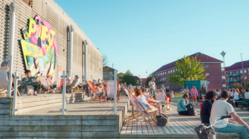
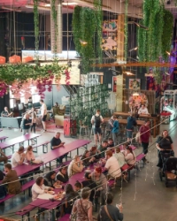
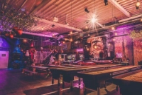
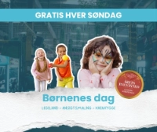

VELKOMMEN TIL AALBORG STREETFOOD
Mere end streetfood - Aalborg Streetfood er stedet, hvor smage, mennesker og oplevelser mødes. Nyd mad fra hele verden samt underholdende aktiviteter og events.

Mere end streetfood - Aalborg Streetfood er stedet, hvor smage, mennesker og oplevelser mødes. Nyd mad fra hele verden samt underholdende aktiviteter og events.



Hver søndag forvandles Aalborg Streetfood til et sandt kreativt paradis for de yngste.
Autentisk smag fra Mexico - oplev burritos, nachos og klassiske mexicanske favoritter.
Start dagen med ro og yoga i hyggelige omgivelser ved Limfjorden.
Har du spørgsmål om Aalborg Streetfood, vores madboder, events eller aktiviteter? Find hurtigt svar eller kom i kontakt med os her.